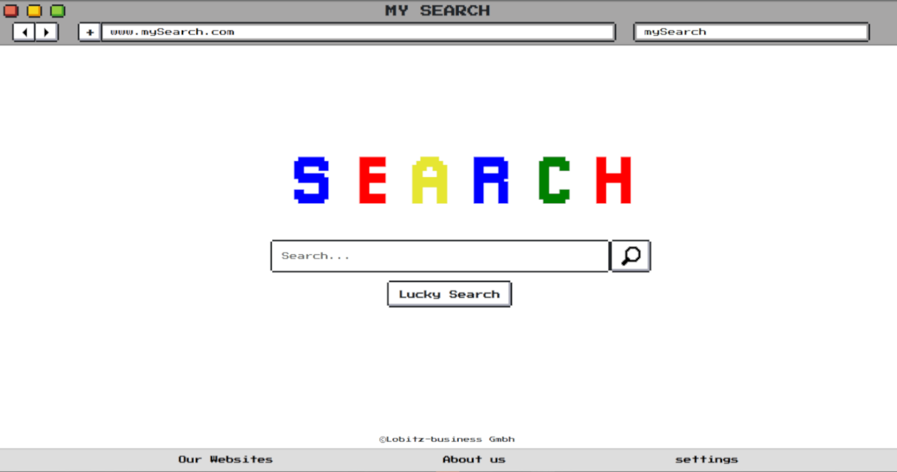
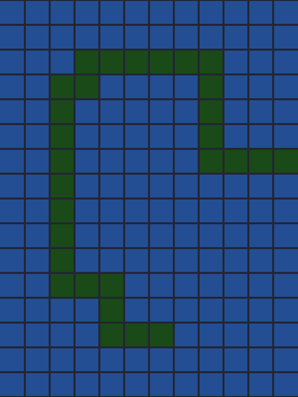
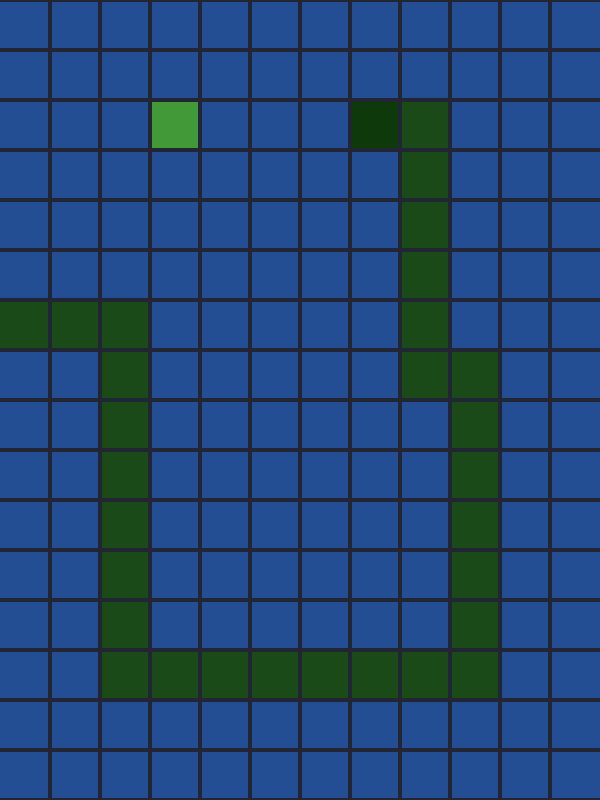
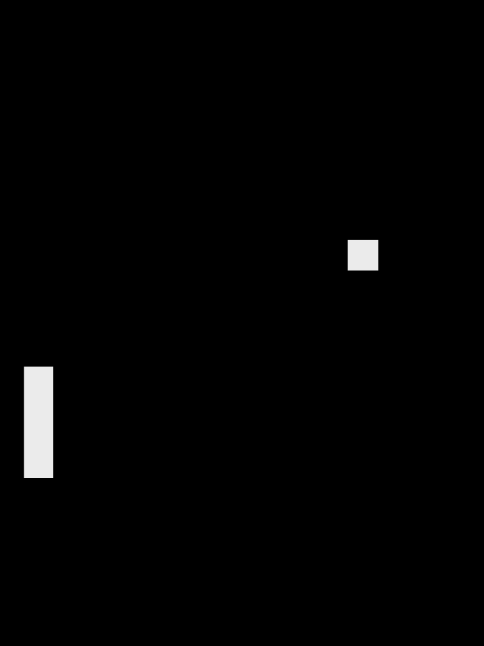
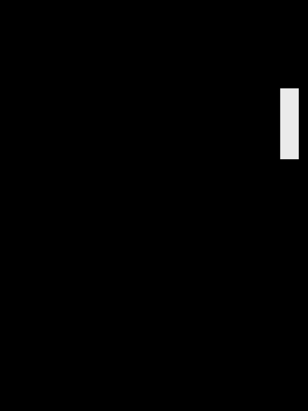

8bit Internet

Ein Projekt, dass an die alten Zeiten des Internets erinnern soll. Vielleicht verstecken sich dort auch noch Geheimnisse

S NAKE

Einfaches Snake-Spiel
in Javascript programiert mit
Details für mehr Abwechslung.
Probiers aus
Simulation
Eine Simulation mit Hilfe von Matter.js

Ping Pong
Ein kleines Javascript Projekt nach dem Vorbild des Klassikers Pong. Optimiert für die mobile Nutzung
